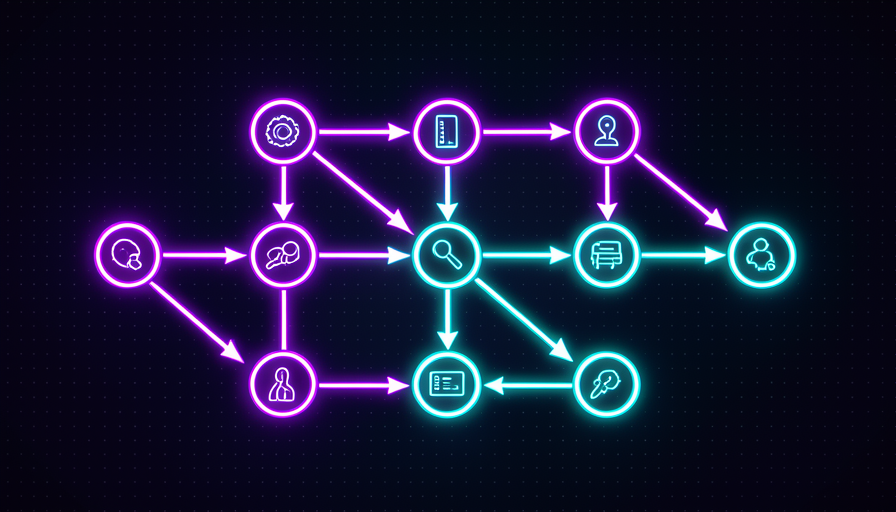

💡 Novo aqui? Três palavras antes de começar
- Workflow — uma sequência de passos automáticos: faz A, depois B, depois C, sem você empurrar de um pra outro.
- Subagente — uma IA especializada numa coisa só (pesquisar, revisar, escrever) que o seu agente principal chama quando precisa.
- Template — um modelo pronto. Você copia, troca o que é seu, e usa. Não monta do zero.
🔄 O que é um workflow: passos encadeados
Uma skill é uma peça: ela faz uma coisa bem feita. Um workflow é a receita: ele encadeia várias peças numa ordem, e o resultado de um passo vira a entrada do próximo. Em vez de você ficar copiando o resultado de um lugar pro outro, o fluxo faz isso sozinho.
Pense num pedido de comida por app: você toca uma vez e, nos bastidores, acontece uma fila de passos — confirma o pagamento, avisa a cozinha, chama o entregador, te manda o status. Você não empurra cada etapa. Um workflow de IA é a mesma ideia, só que pra trabalho: buscar → conferir → resumir, ou ideia → texto → imagem, encadeados.
🔑 A ideia central
A diferença entre uma tarefa e um trabalho:
- •Skill (uma tarefa): "resuma este texto" → vem o resumo. Fim.
- •Workflow (um trabalho): "pesquise o tema, confira as fontes e me entregue um relatório" → vários passos, um resultado final.
Conceitos-chave
🧩 Templates de subagentes prontos
Um subagente é uma IA com um papel só. Em vez de pedir tudo pra uma IA genérica, você monta um pequeno time: um que só pesquisa, um que só revisa, um que só escreve. Cada um faz melhor a sua parte porque tem uma instrução estreita e clara.
A boa notícia: você não precisa inventar esses papéis. Existem templates prontos — descrições padrão de "o que esse agente é, o que faz e o que não faz". Você copia o template, ajusta um detalhe ou outro, e já tem o membro do time.
✓ Um bom template de subagente
- ✓Tem um papel só (pesquisador, revisor...)
- ✓Diz o que fazer e o que não fazer
- ✓Define como entregar o resultado
- ✓É curto — cabe num parágrafo
✗ Um template ruim
- ✗"Faça tudo" — papel sem foco
- ✗Sem limites: não sabe o que evitar
- ✗Não diz qual é a entrega esperada
- ✗Gigante e confuso
💡 Dica prática
Comece com dois ou três subagentes, não dez. Um pesquisador, um redator e um revisor já cobrem a maioria dos trabalhos. Mais agentes = mais coisa pra dar errado. Cresça o time só quando sentir falta.
Conceitos-chave
🔬 Um workflow de pesquisa pronto
O fluxo de pesquisa é o "ovo de Colombo" dos workflows: três passos simples que, juntos, te poupam horas. Buscar as fontes, conferir se são confiáveis e batem entre si, e resumir num relatório com as fontes anotadas. Cada passo tem um trabalho claro.
O passo do meio — conferir — é o que separa pesquisa de boato. É ali que o fluxo descarta o que não tem fonte e marca o que está em dúvida. Sem ele, você só tem um resumo bonito de coisa que pode estar errada.
🧪 Workflow pronto pra copiar (pesquisa em 3 passos)
Objetivo: sair de um tema vago e chegar num relatório curto e com fontes — sem ler dez abas na mão. Cole no Claude ou no ChatGPT, trocando o que está entre < >.
Você é meu agente de pesquisa. Faça este workflow em 3 passos, me mostrando o resultado de cada passo antes de seguir: TEMA: <o que você quer pesquisar, ex: melhores planos de celular pré-pago> PASSO 1 — BUSCAR: liste de 4 a 6 fontes recentes sobre o tema, com o título e o link de cada uma. PASSO 2 — CONFERIR: para cada fonte, diga se é confiável e se concorda com as outras. Descarte as duvidosas e me avise quais. PASSO 3 — RESUMIR: escreva um relatório de 1 página com: - 3 a 5 conclusões principais (cada uma com a fonte ao lado), - 1 ponto em que as fontes discordam, - o que ainda ficou em aberto.
Como verificar que deu certo: o relatório final deve ter fontes ao lado de cada conclusão e citar pelo menos um desacordo. Se vier um texto liso sem fontes, o passo 2 foi pulado — peça pra refazer conferindo.
💡 Dica prática
Peça pra ver o resultado de cada passo antes do próximo. Assim você corta cedo: se as fontes do passo 1 já estão ruins, não adianta resumir. Conferir no meio do caminho é mais barato que descobrir o erro no fim.
Conceitos-chave
🎨 Um workflow de conteúdo pronto
Criar conteúdo do nada cansa. Um workflow transforma isso numa linha de produção: ideia → roteiro → texto → imagem. Cada estágio entrega algo concreto que o próximo usa — o roteiro guia o texto, o texto sugere a imagem. Você dá a ideia e revisa nos pontos de troca.
A imagem abaixo é a planta dessa linha. Repare que não é mágica: é a mesma lógica de encadeamento do tópico 1, só aplicada a um trabalho criativo. O valor é não recomeçar do zero a cada post.

🏭 Os 4 estágios da linha
- 1.Ideia: você (ou um agente) define o tema e o público.
- 2.Roteiro: a IA monta a estrutura — título, tópicos, chamada.
- 3.Texto: escreve o conteúdo seguindo o roteiro.
- 4.Imagem: sugere/gera a arte que combina com o texto.
Você revisa entre os estágios. Aprovou o roteiro? Segue pro texto. Não gostou? Ajusta antes de gastar o resto.
Conceitos-chave
🪡 Adaptar um template ao seu fluxo
O template é o esqueleto; você põe a carne. Adaptar é trocar três coisas: as ferramentas (onde ele busca, onde salva), os passos (tira o que não te serve, acrescenta o que falta) e a entrega (o formato que você quer no fim). Não precisa reescrever o fluxo — só ajustar essas peças.
Regra de ouro: mude uma coisa por vez e teste. Se você trocar tudo de uma vez e quebrar, não sabe qual mudança foi a culpada. Pequenos ajustes, um de cada vez, mantêm o controle nas suas mãos.
🔧 Troque as ferramentas
Onde o template diz "busque na web", aponte pro seu drive, sua planilha, seu e-mail.
➕ Ajuste os passos
Tire um passo que não te serve, acrescente um que falta (ex.: "traduza pro português").
📦 Defina a entrega
Diga o formato final: e-mail, post, planilha, áudio. O mesmo fluxo, saída diferente.
🧪 Teste uma mudança por vez
Mudou? Rode. Funcionou? Próxima. Quebrou? Você sabe exatamente o que foi.
Conceitos-chave
🔒 Encadear com segurança
Quanto mais longo o fluxo, mais lugares pra um errinho virar bola de neve. O remédio é simples: pontos de conferência entre os passos. Antes de uma ação que mexe no mundo real — mandar um e-mail, apagar um arquivo, gastar dinheiro — o fluxo para e pede o seu OK.
A regra prática: passos que só leem ou rascunham podem rodar sozinhos; passos que mudam algo de verdade pedem confirmação. Assim o workflow continua rápido, mas nada irreversível acontece sem você ver.
✓ Pode rodar sozinho
- ✓Buscar e ler informação
- ✓Rascunhar um texto (sem enviar)
- ✓Resumir, organizar, comparar
- ✓Gerar uma sugestão pra você revisar
✗ Pede sua confirmação
- ✗Enviar e-mail ou mensagem
- ✗Apagar ou sobrescrever arquivos
- ✗Gastar dinheiro / fazer compras
- ✗Publicar algo pro público
🎯 O hábito que salva
Sempre que montar um workflow novo, pergunte: "qual passo aqui é irreversível?". Esse é o passo que ganha um ponto de conferência. O resto pode correr solto.
Conceitos-chave
✋ Antes de seguir — o que separa um workflow de uma skill solta?
🎓 Resumo do módulo
Próximo módulo:
3.5 — ⚡ Automação e gatilhos: como fazer seu Jarvis agir sozinho, na hora certa, sem você pedir.